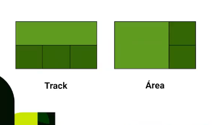

¿Qué es CSS GRID? Bien, pues css grid para resumir es una función que se añadió a CSS para que puedas organizar tus elementos en una grilla. Pero cómo que una grilla? Una grilla espacio que te permite organizar tus elementos en la forma que desees. Por ejemplo, si tienes una tabla con una cantidad de columnas determinada, puedes organizar tus elementos de forma que sean fácilmente manejables.
Un contenedor es el espacio que contiene a otros elementos. Es decir, LA GRILLA Por ejemplo, una lista contiene a todos los elementos de la lista. Un formulario contiene a todos los elementos del formulario.
ITEMSUn item es un elemento que se encuentra dentro de un contenedor (Grilla). Por ejemplo, un pedazo del espacio disponible de una grilla.
LINEASUna línea es una división que separa los items de un contenedor. Se puede decir que una linea separa las filas de las columnas
CELDASUna celda es la unidad minima que podremos tener en una grilla, este es el llamado elemento de la grilla.
TRACKS Y AREASUn track es una división que separa las columnas de una grilla. Un area es una división que separa las filas de una grilla.
